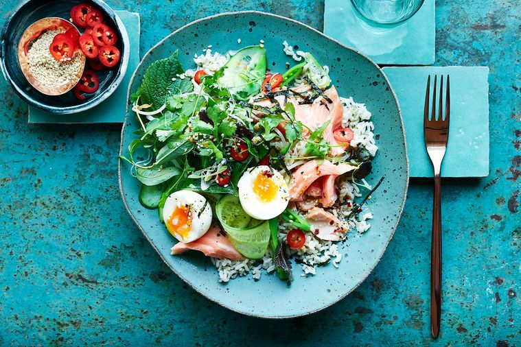

Shannon Bennett's salmon and soft-boiled egg rice bowl

INGREDIENTS:
- - 1 cup (180g) white basmati rice, rinsed and drained
- - 2 x 300g salmon fillets, skin and bones removed
- - 1 tbs extra virgin olive oil
- - 1/2 lime, juiced
- - 1 cup bean sprouts, trimmed
- - 1 Lebanese cucumber, sliced horizontally with a mandoline
- - 2 spring onions, thinly sliced
- - 2 tsp brown sugar
- - 50g snow peas, shredded
- - 50g sugar snaps, shredded
- - 1/4 bunch each mint, Vietnamese mint & coriander, leaves picked, then torn
- - 4 soft-boiled eggs, halved
- - 1 long red chilli, thinly sliced (optional)
- - 2 sheets nori paper, toasted and shredded
- - 1 tbs toasted sesame seeds
- Preheat oven to 150°C.
- Cook rice according to packet instructions and set aside.
- Place salmon on a lined baking tray, drizzle over olive oil, season well and allow to come to room temperature while oven heats up. Bake salmon for 10-12 minutes or until cooked to your liking. Rest for 5 minutes, then carefully break up flesh and drizzle over lime juice. Set aside.
- For the dressing, combine ingredients in a bowl, stirring until sugar dissolves, and set aside.
- Place bean sprouts, cucumber, spring onion, snow peas, sugar snaps and herbs in a large bowl and toss to combine.
- To serve, dress salad, and toss to combine. Divide rice, salad and salmon among 4 serving bowls. Top with soft-boiled egg and chilli, if using, and scatter over nori and sesame seeds.